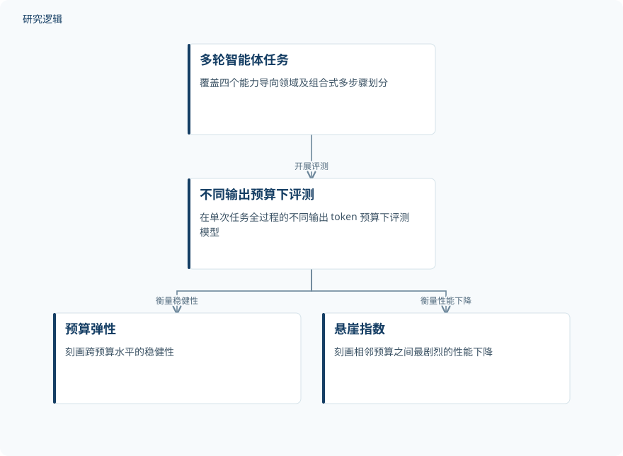

摘要解读
TokenCliff：多轮大语言模型智能体输出词元预算敏感性基准
TokenCliff: Benchmarking Output-Token Budget Sensitivity in Multi-Turn LLM Agents
解读更新 2026-11-27 22:49 · 依据公开摘要整理，未核验全文细节
大语言模型智能体在多轮任务中能使用多少输出 token，不只是成本设置，也可能影响任务表现。TokenCliff 将输出预算纳入评测，帮助读者关注模型性能随预算变化的稳定性。
文章目录
智能体评测为何需要关注输出预算
输出 token 预算是大语言模型智能体部署的重要约束，但摘要指出，现有基准通常只在单一固定预算或较宽裕的预算下评估。这样的评测视角，难以直接呈现性能随预算变化的情况。
TokenCliff 聚焦多轮智能体，以单次任务全过程的输出 token 预算为评测条件，考察不同预算下的任务表现。
从任务集合到预算敏感性指标
该基准包含 660 个确定性任务，覆盖文件操作、数据转换、工具使用和规划四个能力导向领域，另有一个组合式多步骤划分。
作者提出两个指标：预算弹性（Budget Elasticity）用于刻画跨预算水平的稳健性；悬崖指数（Cliff Index）用于刻画相邻预算之间最剧烈的性能下降。
评测涉及 10 个大语言模型、从 200 到 8,192 tokens 的五个预算水平，共得到 33,000 个评测回合。
依据摘要整理的预算敏感性评测过程


仅概括摘要明确陈述的任务、预算评测与指标，不表示未报告的实验配置。
下载 SVG图示关系说明
实线表示相邻阶段的信息流，虚线表示跨阶段联系或反馈。
多轮智能体任务 → 不同输出预算下评测：开展评测；不同输出预算下评测 → 预算弹性：衡量稳健性；不同输出预算下评测 → 悬崖指数：衡量性能下降
相邻预算间也可能出现性能悬崖
摘要报告，相邻预算水平之间的准确率降幅最高可达 32 个百分点。这提示读者不能仅凭某个预算下的成绩，推断模型在邻近预算下也有相近表现。
研究还发现，峰值表现更好或模型规模更大，并不必然意味着预算弹性更强。在本次评测中，多轮设置的预算敏感性也明显高于单次作答诊断。
摘要尚不能说明的评测边界
摘要没有列出具体模型、各任务类别的样本构成，也没有说明组合式多步骤划分的具体内容；因此，仅凭摘要无法判断结果对不同任务和模型的适用范围。
摘要没有给出单次作答诊断的具体设置、两项指标的计算细节或其他验证范围。多轮与单次作答的差异应限于所报告的评测条件理解，不能直接推广到所有应用。
阅读启发：把预算曲线纳入模型选择
对于需要多轮交互的大语言模型应用，阅读启发是：除了比较最高准确率，也可留意不同输出预算下表现是否稳定，以及相邻预算之间是否存在明显落差。
进一步阅读时，可重点查看预算弹性与悬崖指数如何计算、多轮与单次作答如何比较，以及具体任务和模型如何构成；摘要本身尚不足以回答这些问题。
以上为本站阅读启发与建议，不是论文已验证的结论。